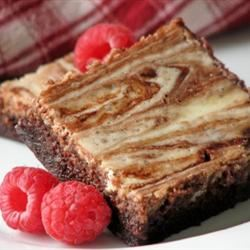

Cheesecake Brownies

Traditional brownies covered in a cheesecake topping
Ingredients
- 1 550g package brownie mix
- 1 200g package cream cheese
- 1 egg
- ⅓ cup white sugar
Steps
- Prepare the brownie mix as directed by manufacturer. Preheat oven to temperature indicated on box.
Grease a 9x13 inch pan.
- Spread the brownie batter evenly into the prepared pan. Using an electric mixer, beat together the cream
cheese, egg and sugar until smooth. Dollop the cream cheese mixture on top of the brownie batter. Swirl
together using a knife or skewer.
- Bake according to manufacturer's instructions. Brownies will be done when a toothpick inserted comes out
clean. Cool in the pan, then cut into squares and serve.
Back to recipe list